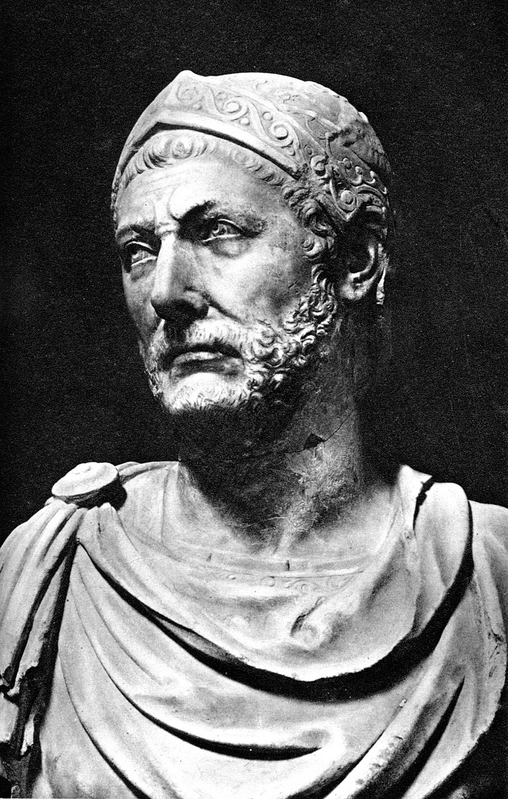

Annibale
Annibale Barca (in latino: Hannibal; in greco antico: Ἁννίβας, Hanníbas; Cartagine, 247 a.C. - Lybissa, 183 a.C.) è stato un condottiero e politico cartaginese, famoso per le sue vittorie durante la seconda guerra punica e definito da Theodor Mommsen "il più grande generale dell'antichità". Figlio del comandante Amilcare Barca e fratello maggiore di Asdrubale, Annibale, sin da piccolo profondamente nemico di Roma e deciso a combatterla, concepì ed eseguì un audace piano di guerra per invadere l'Italia. Marciando dalla Spagna, attraverso i Pirenei e le Alpi, scese nella penisola, dove sconfisse le legioni romane in quattro battaglie principali: battaglia del Ticino (218 a.C.), battaglia della Trebbia (218 a.C.), battaglia del lago Trasimeno (217 a.C.), battaglia di Canne (216 a.C.) - e in altri scontri minori. Dopo la battaglia di Canne i Romani evitarono altri scontri diretti e gradualmente riconquistarono i territori del sud Italia di cui avevano perso il controllo. La seconda guerra punica terminò con l'attacco romano a Cartagine, che costrinse Annibale al ritorno in Africa nel 203 a.C., dove fu definitivamente sconfitto nella battaglia di Zama, nel 202 a.C.. Dopo la fine della guerra Annibale guidò Cartagine per alcuni anni, ma fu costretto all'esilio dai Romani e nel 195 a.C. si rifugiò dal re seleucide Antioco III in Siria, dove continuò a propugnare la guerra contro Roma. Dopo la sconfitta di Antioco III si trasferì presso il re Prusia I, in Bitinia. Quando i Romani chiesero a Prusia la sua consegna, Annibale preferì suicidarsi; era il 183 a.C. Dotato di grandi capacità tattiche e strategiche, avveduto e sagace, Annibale, dopo le impressionanti vittorie iniziali, continuò a battersi tenacemente in Italia per oltre quindici anni con il suo piccolo esercito di veterani isolato in territorio nemico, cercando fino all'ultimo di contrastare il predominio di Roma. Per le straordinarie qualità dimostrate durante la sua carriera militare, Annibale è considerato uno dei più grandi generali e strateghi della storia. Polibio, suo contemporaneo, lo paragonava al suo grande rivale Publio Cornelio Scipione Africano; altri lo hanno accostato ad Alessandro Magno, Giulio Cesare e Napoleone.